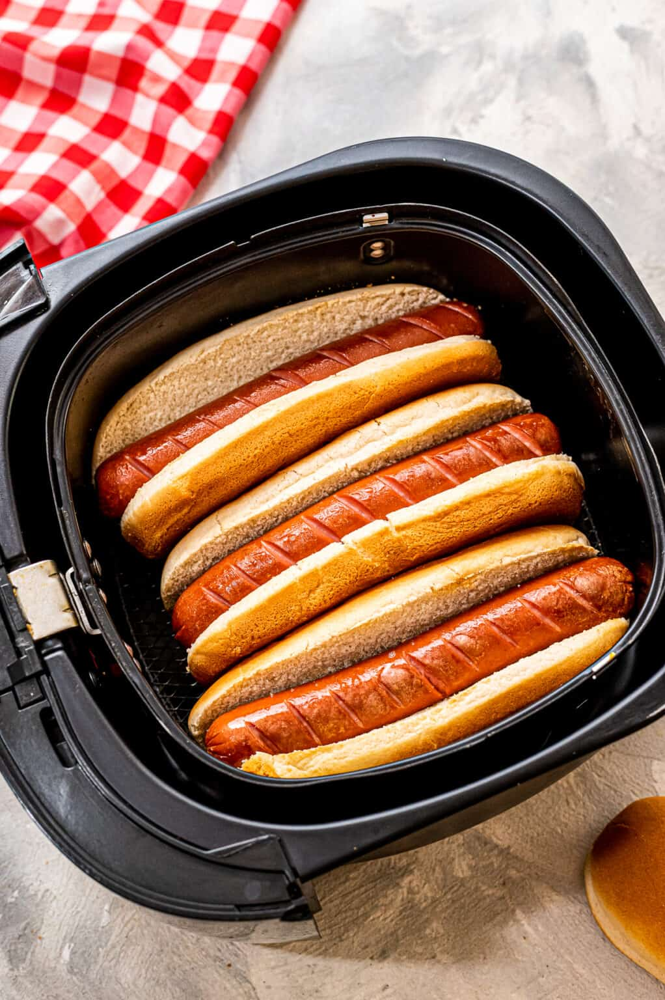

Air Fried Hot Dogs

All dogs go to air fryer?
It doesn't get easier than this when you are craving hot dogs. Make these delicious Air Fryer Hot Dogs that are ready in less than ten minutes with a warm toasty bun to top it off with!
Skip the grill, the microwave, and the pot of boiling water--air fryer is the best way to cook them. This is such an easy method and my favorite way to cook them when I want hot dogs for lunch or dinner.
Ingredients
- 4 hot dogs
- 4 hot dog buns
- favorite toppings i.e. ketchup, mustard, sauerkraut, relish
Steps
- Cut small slits in one side of the hot dog. This is for appearance and optional.
- Place hot dogs in an air fryer basket and cook at 390 degrees F for 4-6 minutes.
- Remove hot dogs and place in buns. Return to the air fryer and cook at 390 degrees F for an additional 2-3 minutes or until buns are toasted.
- Remove and top with your favorite toppings.